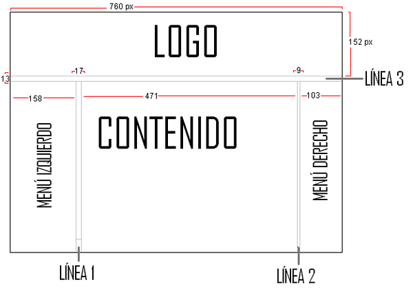
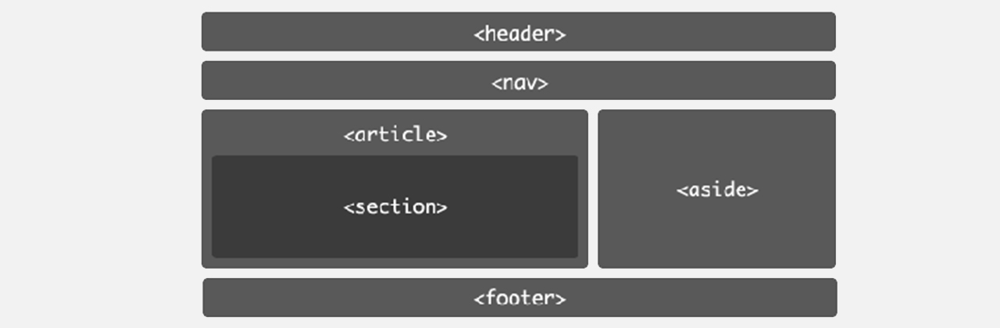

QUE ES MAQUETACION WEB
El proceso de maquetación web es la transformación del diseño de un producto web en un conjunto de
archivos (html, css, js) capaces de ser reproducidos por los navegadores web. La maquetación web es
el proceso en el que el prototipo gráfico también denominado «layout» (con los requisitos estructu-
rales y estéticos definidos y aprobados en un análisis inicial) pasa a transformase en código html,
css y js (estándares web) para que los navegadores puedan interpretarlo correctamente.
Los estándares más utilizados son:
-HTML/XHTML: para generar el código del contenido.
-CSS: para definir la presentación gráfica de la maquetación.
-JS (JavaScript): para mejorar la interacción de sus elementos
Un paso previo a la maquetación de la página web es armar un wireframing (consiste en realizar un boce-
to o esquema sencillo de lo que queremos hacer) este proceso varía demasiado ya que cada persona lo hace
a su manera, pero siguiendo con una estructura jerárquica implícita que es la siguiente:
- Contenido
- Cabecera
- Menu
- Cuerpo
- Contenido
- Barra Lateral
- Pie de pagina
Esta estructura la podemos representar fácilmente con HTML, pero necesitamos
saber exactamente que etiquetas utilizar.

ESTRUCTURA O ESQUELETO DE LA PAGINA WEB
¿Que es HTML 5?
HTML5 es un lenguaje markup (de hecho, las siglas de HTML significan Hyper Text Markup Language)
usado para estructurar y presentar el contenido para la web. Volviendo a qué es HTML5. Se trata
de un sistema para formatear el layout de nuestras páginas, así como hacer algunos ajustes a su
aspecto. Con HTML5, los navegadores como Firefox, Chrome, Explorer, Safari y más pueden saber cómo
mostrar una determinada página web, saber dónde están los elementos, dónde poner las imágenes, dónde
ubicar el texto
Etiquetas para la estructura básica para la maquetación de una página web:
Cabecero: la etiqueta "header"
Esta etiqueta sirve para delimitar el cabecero de la página, o el de cualquier otra zona de contenido.
Navegacion: la etiqueta "nav"
Su propio nombre lo indica: esta etiqueta sirve para delimitar menús de navegación. El típico menú su-
perior como el que tiene esta página arriba del todo, o también el de “Ver artículo siguiente” y “Ver
artículo anterior”, o los de paginación entre el listado de artículos.
Porción de contenido: la etiqueta "section"
Es decir, section son los apartados, subapartados, capítulos o secciones de un mismo contenido indepen-
diente. ¿Escribes un artículo, noticia o tutorial? Irá dentro de article, pero dentro de éste aún puedes
dividirlo en varias partes con la etiqueta section.
Bloques relacionados: la etiqueta "aside"
A veces nos interesa incluir bloques con información relacionada en nuestra página web. Un anuncio, un
listado de artículos relacionados o comentarios. Todo aquel contenido antes mencionado ira englobado de-
ntro de un bloque.
Pie: la etiqueta "footer"
Esta etiqueta permite incluir información adicional sobre el contenido o bien sobre la página completa,
dependiendo del lugar donde esté.
Contenedor genérico: la etiqueta "div"
Se trata de un contenedor genérico, que principalmente utilizaremos en ciertas situaciones:
- Cuando queramos aplicar un estilo o aspecto visual mediante código CSS a varios elementos contiguos.
- Porque el código de programación que utilizamos requiera englobar varios elementos en una misma etiqueta.
- Cuando necesitemos englobar varios elementos por algún otro motivo.

DISEÑO Y PRESENTACION DE UNA PAGINA WEB
¿Qué es css3?
El nombre hojas de estilo en cascada viene del inglés Cascading Style Sheets, del que toma sus siglas.
CSS es un lenguaje usado para definir la presentación de un documento estructurado escrito en HTML o XML
(y por extensión en XHTML). El W3C(World Wide Web Consortium) es el encargado de formular la especificac-
ión de las hojas de estilo que servirán de estándar para los agentes de usuario o navegadores.
Para qué sirve el css 3?
El CSS sirve para definir la estética de un sitio web en un documento externo y eso mismo permite que modi-
ficando ese documento (la hoja CSS) podamos cambiar la estética entera de un sitio web, el mismo sitio web
puede variar totalmente de estética cambiando solo la CSS, sin tocar para nada los documentos HTML o jsp o
asp que lo componen. CSS es un lenguaje utilizado para dar estética a un documento HTML (colores, tamaños
de las fuentes, tamaños de elemento, con css podemos establecer diferentes reglas que indicarán como debe
presentarse un documento. Podemos indicar propiedades como el color, el tamaño de la letra, el tipo de letra,
si es negrita, si es itálica, también se puede dar forma a otras cosas que no sean letras, como colores de fon-
do de una página, tamaños de un elemento (por ejemplo el alto y el ancho de una tabla.
 Cómo podemos editar los archivos web
La edición de los archivos web y su base de html se realiza mediante el uso de editores de texto básico como:
Notepad++ o UltraEdit, que nos permiten escribir código sobre un documento en blanco. Para poder maquetar un
documento web con este tipo de editores necesitaremos tener amplios conocimientos en html y ciertas nociones
de programación.
Cómo podemos editar los archivos web
La edición de los archivos web y su base de html se realiza mediante el uso de editores de texto básico como:
Notepad++ o UltraEdit, que nos permiten escribir código sobre un documento en blanco. Para poder maquetar un
documento web con este tipo de editores necesitaremos tener amplios conocimientos en html y ciertas nociones
de programación.